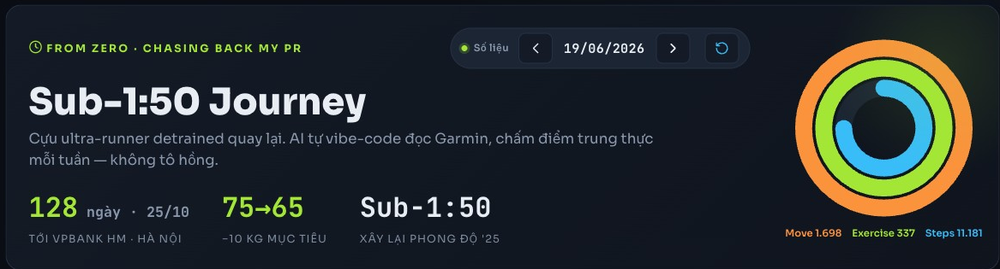

Một bộ não thứ hai, dựng theo đúng cách bạn làm việc.
Không phải AI thông minh hơn — là AI biết bạn.
Lưu lại bạn là ai, đang làm gì, đã quyết gì — để bạn và AI dùng lại lâu dài, không kể lại từ đầu mỗi lần.
Hết 45 phút: bạn phân biệt được AI thật sự làm gì · một agent làm được gì · và tự dựng bộ não thứ hai — bắt đầu ngay tối nay.
Tôi đã chạy hệ này cho việc thật của mình — buổi nay tôi muốn mỗi người tự dựng bản của riêng mình, để cả phòng làm việc với AI theo cùng một cách.
Bạn đã thử AI rồi — nhưng nó chưa thật sự giúp.
Không phải vì AI dở — mà vì AI không biết bạn. Ba điều này nghe quen chứ?
Mỗi lần kể lại từ đầu
Mở phiên mới là tờ giấy trắng: bạn lại khai mình là ai, đang làm gì. AI không tích lũy được gì về bạn.
Không có trí nhớTrả lời chung chung
Không biết bối cảnh của bạn nên AI đưa bản nháp "ai cũng đúng" — bạn sửa còn lâu hơn tự làm.
Sửa hơn tự làmTri thức tan biến
Câu trả lời hay nhất, file quan trọng nhất — tan khi đóng cửa sổ, mỗi nơi một bản. Tuần sau cần lại: mất.
Không có nhà gốcAI có trí nhớ — nhưng đó là cache, không phải kho gốc.
"ChatGPT giờ nhớ được mà?" — đúng. Nhưng nhớ kiểu đó giới hạn và rơi rụng: chat tới một lúc là quên dần. Mọi trí tuệ đều có trí nhớ ngắn hạn.
Như một cache
- Giới hạn — chỉ chứa được ngần ấy
- Rơi rụng — chat lâu là tự tóm tắt, mất chi tiết
- Mờ — bạn không thấy / không kiểm soát nó giữ gì
- Không phải của bạn — khoá trong một công cụ
Là source of truth
- Đầy đủ — giữ nguyên, không tự cắt
- Chính xác — đọc lại y như đã ghi
- Bạn kiểm soát — thấy & sửa được mọi thứ
- Mang đi đâu cũng chạy — không khoá công cụ
Bạn đâu chạy KPI trên cache — bạn chạy trên mart. RAM vs ổ cứng · session vs database
Đa số mới chỉ prompt — chưa đưa AI dữ liệu của mình.
Cách dùng AI phổ biến = prompt: hỏi một câu, AI đáp. Trả lời khá hơn khi bạn đưa ngữ cảnh — nhưng đó vẫn là gõ tay từng lần. Bối cảnh thật của bạn nằm trong dữ liệu & file của chính mình (cái kho ở slide trước); chừng nào AI chưa có nó, nó còn đoán chung chung — chưa thể là second brain hiểu bạn.
Khác ở chỗ: AI đã có dữ liệu của bạn để tự dùng, không bắt khai lại. Nhưng nó vẫn mới chỉ trả lời — chưa làm xong việc cho bạn.
Chat trả lời. Agent làm xong việc.
Chat trả lời một câu hỏi rồi dừng — như ô search. Agent có tay (chạm file/app) + trí nhớ (ghi ra file) → nó làm xong cả việc trên dữ liệu của bạn:
Tìm & tổng hợp tài liệu
Thả cả thư mục (BRD, báo cáo, email) → AI đọc hết, tóm tắt, soạn bản nháp. 20 file → 1 bản tóm tắt.
Phân tích số → soi lệch
Gom số nhiều nguồn → 1 bảng, tự flag dòng lệch; dựng nhận định & báo cáo. Đúng việc reconcile.
Nối thẳng app bạn dùng
Qua "cổng" MCP: đọc Power BI, Notion, Garmin… không copy tay.
Cùng một lời — agent tự tìm · tổng hợp · phân tích · dựng báo cáo trên dữ liệu thật của bạn.
Sáu thứ nó làm cho bạn.
Nhớ thay bạn
Mở phiên mới, AI đã biết bạn là ai và đang làm gì.
vd: không phải kể lại "tôi là ai" mỗi sángTrả lời có ngữ cảnh
Tư vấn dựa trên dự án, quyết định, số liệu thật của bạn.
vd: gợi ý theo KPI tuần này, không nói chung chungTự dựng sản phẩm hoàn chỉnh
Phân tích, lập luận rồi dựng thành báo cáo, slide, email — đúng giọng bạn.
vd: báo cáo phân tích KPI — có số, nhận định & đề xuất, đúng văn phong của bạnGiữ nhiều việc không lẫn
Chạy song song nhiều dự án mà ngữ cảnh không trộn.
vd: việc cơ quan không lẫn vào kế hoạch chạy bộNhớ quyết định & lý do
Không lặp lại tranh luận cũ.
vd: "vì sao hồi đó chốt phương án B?" — vẫn cònPhân tích dữ liệu của bạn
Biến số liệu của riêng bạn thành quyết định.
vd: đọc dữ liệu chạy bộ → gợi ý tuần tập tớiĐể AI thành agent tốt hơn — cho nó một cấu trúc.
Agent đọc & ghi file liên tục — file bừa thì nó ghi đè, đọc nhầm, tìm không ra. Cho nó một cấu trúc (quy ước nơi-cất · nơi-tìm) → agent làm đúng & nhớ lâu. Cấu trúc đó = bộ não thứ hai: bạn và AI cùng đọc/ghi, mỗi sự thật một nhà; bên trong AI đóng vai thủ thư (data custodian) dọn dẹp ngăn nắp.
Bạn không cần thuộc bảng này — AI tự dựng. Chi tiết (tên file · 3 lớp) → để dành buổi nâng cao.
Sáu viên gạch — ráp dần, không cần một lúc.
Đây không phải đồ chơi của riêng tôi — mấy mảnh ai cũng ráp được. Tối nay chỉ cần 1 file + ChatGPT là đủ bắt đầu; viên #1+#2 (Claude Code · Obsidian) là bản đầy đủ, gỡ sâu ở buổi nâng cao.
Cỗ máy điều khiển
AI agent: đọc/ghi file, chạy tool, điều phối cả hệ.
ra lệnh bằng lời → nó tự làmNơi lưu = trí nhớ
Vault file text trên máy; mỗi sự thật một nhà.
single source, đọc lại được mãiCổng nối app ngoài
Kéo dữ liệu / đẩy thao tác sang app khác, không copy tay.
draw.io · Power BI · Notion · GarminĐóng gói việc lặp
Một lệnh chạy cả quy trình quen thuộc.
/shutdown · /daily · kpi-dashboardĐội ngũ trong một
AI đóng nhiều vai để làm và phản biện.
một nhóm AI tự phản biện nhau — vd soát chính deck nàyCửa vào bằng giọng
Nói thay vì gõ, chạy ngay trên máy bạn.
đọc ý tưởng → AI ghi thành fileCopy một prompt — AI dựng hồ sơ cho bạn.
Không phải ngồi nhìn file trắng. Dán prompt này vào ChatGPT → nó phỏng vấn bạn 5 câu → xuất ra "Hồ sơ của tôi" để dùng lại mãi.
- Bấm Copy (nút bên cạnh)
- Mở ChatGPT, dán vào, gửi
- Trả lời 5 câu nó hỏi — thật, ngắn
- Nó xuất "Hồ sơ của tôi" → lưu vào 1 file (hoặc ghim trong ChatGPT)
- Phiên sau: dán lại vào đầu → AI hiểu bạn ngay, khỏi kể lại
Đây là trí nhớ dài hạn đầu tiên của bạn. ⚠ Đang luyện trên dữ liệu không nhạy cảm — data thật của bank để dành Kiro.
Mạnh — nhưng bạn vẫn cầm lái.
Tin — nhưng phải kiểm.
Với số, ngày tháng, trích dẫn, quyết định quan trọng → soát lại nguồn. Hiểu vì sao trước; đừng giao 100% rồi không nắm gì. Coi đầu ra của AI là bản nháp, không phải sự thật.
Không phải job mới phải nuôi: bồi đắp 2–3 dòng/ngày ngay lúc đang làm việc thật, bỏ vài ngày không sao — nó là bản ghi chú thông minh, không phải hệ thống.
Không phải lý thuyết — nó đang chạy thật.
Dashboard Garmin không phải "app chạy bộ" — đó là một dự án data đủ chuỗi, chạy trên dữ liệu cá nhân của tôi.

Backlog MVP2 — đầu bài rời rạc → backlog chuẩn
AI đã biết dự án — bẻ đầu bài thành epic / story / ưu tiên; tôi soát lại, không gõ từ đầu.
Đây đúng chuỗi các bạn làm mỗi ngày — extract · pipeline · ETL · đặt KPI · tracking · dự báo · phân tích. Khác mỗi: tôi chạy trên dữ liệu chạy bộ của mình (không nhạy cảm), dựng bằng cách nói chuyện với AI.
Garmin sạch nên 2 tuần — data bank bẩn hơn: phần khó là ETL · reconcile · chốt định nghĩa KPI. AI đỡ phần soạn & dò, không chốt thay bạn. Bước tiếp: thử Kiro (đã duyệt trong bank) trên 1 mart nhỏ.
OS